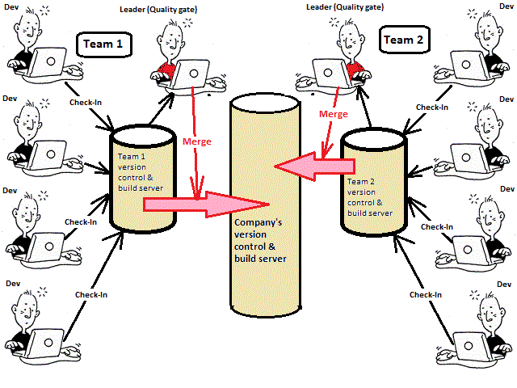

The ever broken build is a big headache for both developer and management. Too many people end-up checking into the same version-control server without much coordination ending up breaking the company's build process all the time. I believe the process must be changed so that every team must have their own sandbox version control system where they can do whatever they want. A designated person will be responsible for integration/merging the team's code base into the company's one. Therefore the team member is only going to be responsible for keeping the team's server up and working while the leader is responsible for inter-team communication and the happiness of the company server. The leader should also holds a seal of approval and should reviews all the lines that are going to leave the team boundaries.
